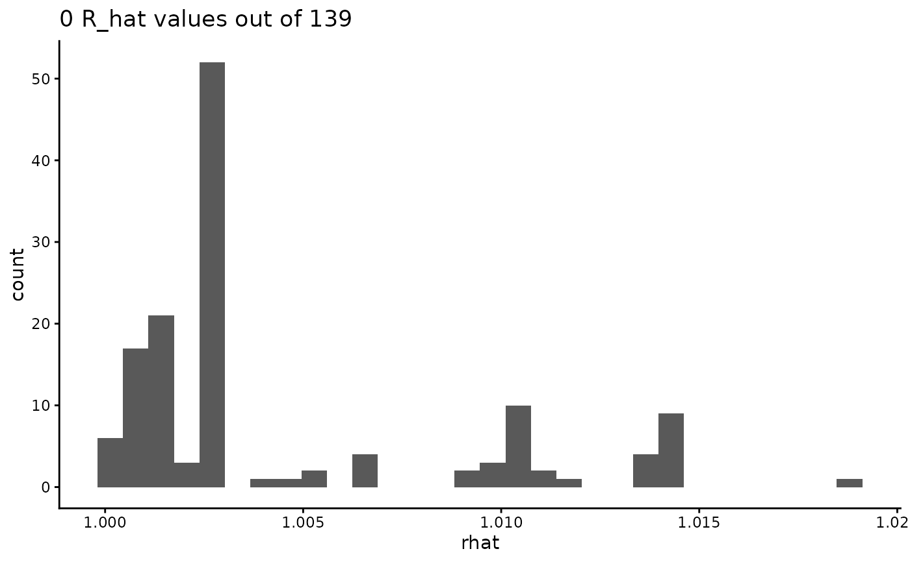

Plot histogram of R_hat values for hmde_fit object.
Source:R/hmde_plot_Rhat_hist.R
hmde_plot_Rhat_hist.RdPlot histogram of R_hat values for hmde_fit object.
Examples
# basic usage of hmde_plot_Rhat_hist
hmde_model("constant_single_ind") |>
hmde_assign_data(Trout_Size_Data)|>
hmde_run(chains = 2, iter = 1000,
verbose = FALSE, show_messages = FALSE) |>
hmde_plot_Rhat_hist()
#>
#> SAMPLING FOR MODEL 'constant_single_ind' NOW (CHAIN 1).
#> Chain 1:
#> Chain 1: Gradient evaluation took 1.6e-05 seconds
#> Chain 1: 1000 transitions using 10 leapfrog steps per transition would take 0.16 seconds.
#> Chain 1: Adjust your expectations accordingly!
#> Chain 1:
#> Chain 1:
#> Chain 1: Iteration: 1 / 1000 [ 0%] (Warmup)
#> Chain 1: Iteration: 100 / 1000 [ 10%] (Warmup)
#> Chain 1: Iteration: 200 / 1000 [ 20%] (Warmup)
#> Chain 1: Iteration: 300 / 1000 [ 30%] (Warmup)
#> Chain 1: Iteration: 400 / 1000 [ 40%] (Warmup)
#> Chain 1: Iteration: 500 / 1000 [ 50%] (Warmup)
#> Chain 1: Iteration: 501 / 1000 [ 50%] (Sampling)
#> Chain 1: Iteration: 600 / 1000 [ 60%] (Sampling)
#> Chain 1: Iteration: 700 / 1000 [ 70%] (Sampling)
#> Chain 1: Iteration: 800 / 1000 [ 80%] (Sampling)
#> Chain 1: Iteration: 900 / 1000 [ 90%] (Sampling)
#> Chain 1: Iteration: 1000 / 1000 [100%] (Sampling)
#> Chain 1:
#> Chain 1: Elapsed Time: 0.051 seconds (Warm-up)
#> Chain 1: 0.036 seconds (Sampling)
#> Chain 1: 0.087 seconds (Total)
#> Chain 1:
#>
#> SAMPLING FOR MODEL 'constant_single_ind' NOW (CHAIN 2).
#> Chain 2:
#> Chain 2: Gradient evaluation took 1.2e-05 seconds
#> Chain 2: 1000 transitions using 10 leapfrog steps per transition would take 0.12 seconds.
#> Chain 2: Adjust your expectations accordingly!
#> Chain 2:
#> Chain 2:
#> Chain 2: Iteration: 1 / 1000 [ 0%] (Warmup)
#> Chain 2: Iteration: 100 / 1000 [ 10%] (Warmup)
#> Chain 2: Iteration: 200 / 1000 [ 20%] (Warmup)
#> Chain 2: Iteration: 300 / 1000 [ 30%] (Warmup)
#> Chain 2: Iteration: 400 / 1000 [ 40%] (Warmup)
#> Chain 2: Iteration: 500 / 1000 [ 50%] (Warmup)
#> Chain 2: Iteration: 501 / 1000 [ 50%] (Sampling)
#> Chain 2: Iteration: 600 / 1000 [ 60%] (Sampling)
#> Chain 2: Iteration: 700 / 1000 [ 70%] (Sampling)
#> Chain 2: Iteration: 800 / 1000 [ 80%] (Sampling)
#> Chain 2: Iteration: 900 / 1000 [ 90%] (Sampling)
#> Chain 2: Iteration: 1000 / 1000 [100%] (Sampling)
#> Chain 2:
#> Chain 2: Elapsed Time: 0.052 seconds (Warm-up)
#> Chain 2: 0.036 seconds (Sampling)
#> Chain 2: 0.088 seconds (Total)
#> Chain 2:
#> `stat_bin()` using `bins = 30`. Pick better value `binwidth`.
